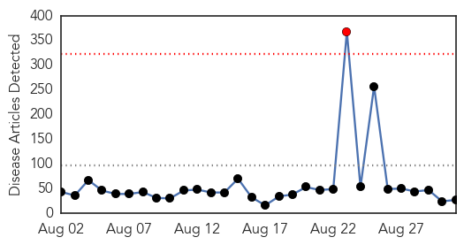
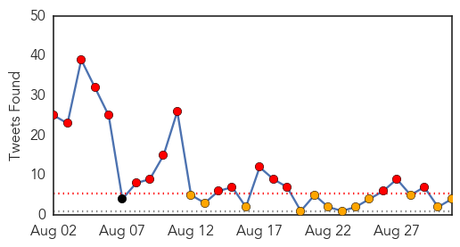
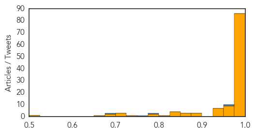

Unknown
30-Day Web Trend
1 alerts, 0 warnings

30-Day Twitter Trend
5 alerts, 0 warnings

Article Locations

Article Confidences

Top Articles:
- 0.956
- Ebola epidemic decimating health workers in Guinea
- 0.866
- Iraqi forces, militias enter besieged northern town -officials
- 0.866
- Russia and Ukraine hand back prisoners
- 0.866
- U.S. applauds European steps towards more Russia sanctions
- 0.866
- Syrian women work in a tomato field in Marjaoun village near the Israeli border in south Lebanon
- 0.836
- Deadly Dog Virus on the Prowl, Don't take it Easy if Your Pet is Under the Weather
- 0.811
- Zimbabwe's Infant, Maternal Mortality Rates Drop
- 0.811
- Zimbabwe's Infant, Maternal Mortality Rates Drop
- 0.794
- Inside Novoazovsk – the pro-Russians' latest conquest
- 0.794
- UK boy with brain tumour found in Spain, parents held
- 0.794
- Putin calls for talks on 'statehood' for east Ukraine
- 0.794
- Tension rises in Hong Kong as Beijing rejects open elections
- 0.794
- Confusion reigns after Lesotho 'coup'
- 0.794
- Kidnapped Yazidi women 'sold to Islamists' in Syria
- 0.794
- French PM vows to safeguard 35-hour work week
- 0.794
- Filipino UN troops escape Islamists in Golan Heights
- 0.794
- EU mulls Russia sanctions as Kiev warns of 'full-scale war'
- 0.794
- Fugitive British killer returns to French psychiatric hospital
- 0.794
- Algerian diplomats held by Islamists are freed in Mali
- 0.765
- Pet Talk: Evaluating risks
- 0.651
- Water-borne diseases spreading in Manda, Koraon blocks
- 0.614
- Five Ways Summer's Heat Brought Hazardous Beach, Lake Conditions
- 0.611
- Mosquito pool in York tests positive for EEE — Portland — Bangor Daily News — BDN Maine
- 0.591
- Overuse of antibiotics puts hospitals, patients at risk
- 0.547
- Curb anaemia deaths in Mussoorie Harsh Vardhan to officials
- 0.525
- Study on causes of rheumatic fever gets underway in Auckland
- 0.520
- Study on causes of rheumatic fever gets underway in Auckland
Top Tweets:
- 0.503
- Cumbre de Presidentes del Mercosur será en Entre Ríos: El gobernador de Entre Ríos, Sergio Urribarri, anunció ... http://t.co/mHg2oY9BOz
Ebola
30-Day Web Trend
5 alerts, 22 warnings

30-Day Twitter Trend
20 alerts, 10 warnings

Article Locations

Article Confidences
Top Articles:
- 1.000
- Zimbabwe Not Able to Detect, Identify Ebola
- 1.000
- What’s missing in the Ebola fight in West Africa
- 1.000
- Higher education and West Africas Ebola outbreak
- 1.000
- Health Workers Strike at Major Ebola Clinic in Sierra Leone
- 1.000
- Ebola outbreak: Health workers strike in Sierra Leone, Liberia lifts quarantine measures
- 1.000
- Ebola outbreak reaches Senegal
- 1.000
- Health Workers Strike At Major Ebola Clinic In Sierra Leone
- 1.000
- Ebola hits fifth country as Sierra Leone health minister fired
- 1.000
- BATTLING THE EBOLA VIRUS OUTBREAK
- 1.000
- West Africa Ebola Outbreak Could Infect 20,000 People - WHO
- 1.000
- Ebola Virus Spreads Into African Cities
- 1.000
- Health workers strike at major Ebola clinic in Sierra Leone
- 1.000
- Sudan bans reporting on Ebola
- 0.999
- Ebola: FG to Seek Amendment of Quarantine Law, Articles
- 0.999
- the edge of knowledge
- 0.999
- Indians in Liberia contribute to anti-Ebola campaign
- 0.999
- Ebola outbreak: Senegal puts 20 people under watch after first case
- 0.999
- Celebration in Liberia as Ebola quarantine lifted
- 0.999
- Ebola fight needs $430 million to end scare
- 0.999
- WHO treating first Senegal Ebola case as ‘priority emergency’
- 0.999
- Congo returnee NA man under observation for Ebola
- 0.999
- Al Jazeera English
- 0.999
- Liberia adds new Ebola centers as tries to contain virus outbreak
- 0.999
- Doctors and Nurses Risk Everything to Fight Ebola in West Africa
- 0.999
- Senegal Ebola case 'a top priority emergency' (Update)
- 0.999
- Canadian laboratory team evacuated from Ebola zone back in Canada
- 0.999
- It was already the worst Ebola outbreak in history. Now it�s moving into Africa�s cities.
- 0.998
- WHO: Senegal Ebola case 'a top priority emergency'
- 0.998
- Student spreads Ebola to Senegal Republican American
- 0.998
- Widow of Nigeria’s sixth Ebola victim also has virus, says state - Africa
- 0.998
- Ebola′s ′avoidable′ impact on the West African economy
- 0.998
- Fear spreads as Ebola moves from remote areas into cities
- 0.998
- Ebola doctor dies in Sierra Leone
- 0.998
- Ebola: The next weapon of mass destruction?
- 0.998
- The Ebola virus is mutating faster in humans than in animal hosts
- 0.997
- Liberian Ebola survivor praises experimental drug
- 0.997
- Travel News - South Africa issues advisory against non-essential travel to Ebola-affected countries
- 0.997
- Experts dig into Ebola’s deadly genes for clues - Virus mutates 300 times from previous strains of Ebola - Kuwait Times
- 0.996
- Liberian survivor praises medicine
- 0.996
- Liberian Ebola survivor praises experimental drug
- 0.996
- Civil Society Statement on the Current Ebola Crisis in West Africa
- 0.996
- Ebola case in Senegal raises the alarm
- 0.995
- Fuad: Scanning at all ports for Ebola virus
- 0.995
- Widow of Nigeria’s sixth Ebola victim also has virus
- 0.995
- West Africa Ebola Vaccine Trials Possible by Early 2015
- 0.995
- West Africa Ebola Vaccine Trials Possible by Early 2015
- 0.995
- Farsnews
- 0.994
- ZMapp Drug Cures 18 lab monkeys infected with Ebola Virus
- 0.994
- ZMapp Tests 100 Percent Effective Against Disease
- 0.994
- Sahara Reporters
Showing top 50 articles...
Top Tweets:
- 0.966
- How malaria in West Africa undermines Ebola control: MT Ebola case in Senegal treated for malaria, stayed w/relatives
- 0.788
- RT: Based on viral genomics, 99 samples says the Ebola epidemic started by just 1 animal-2-human transm. h…
- 0.763
- How *drug-resistant* malaria complicates Ebola: MT Ebola case in Senegal treated for malaria "did not improve." So he left.
- 0.734
- RT: Reversion of advanced Ebola virus disease in nonhuman primates with ZMapp http://t.co/RwsKVPUsOp
- 0.699
- Emerging and re-emerging infectious diseases such as MERS and Ebola; diagnostics and epidemiology.